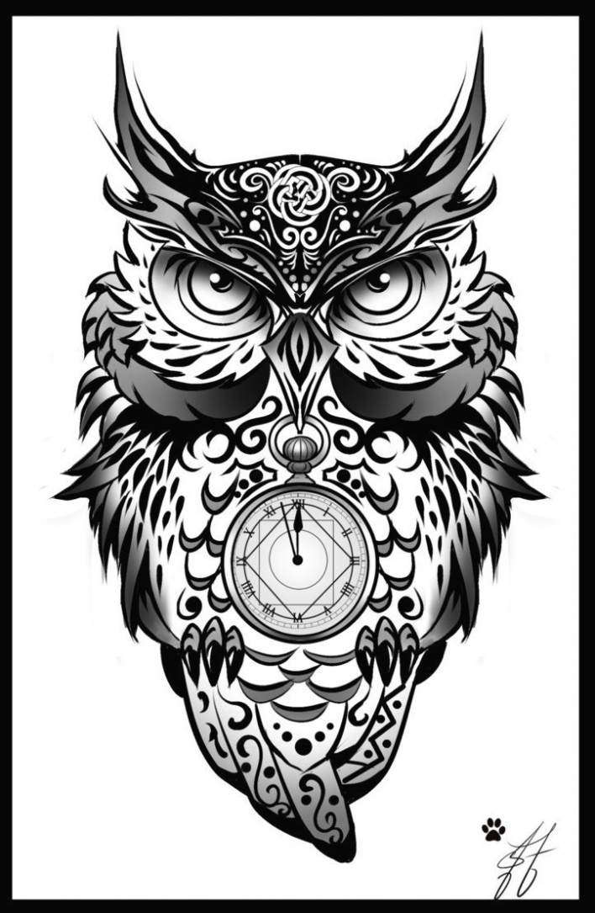

Búho es el nombre común de aves de la familia Strigidae, del orden de los estrigiformes o aves rapaces nocturnas. Habitualmente designa especies que, a diferencia de las lechuzas, tienen plumas alzadas que parecen orejas (sus verdaderas orejas se encuentran al costado de la cabeza, a los laterales de los ojos) y presentan una coloración amarilla o naranja en el iris. Debido a que sus ojos carecen de movilidad y solo pueden ver hacia delante, pueden girar la cabeza 270°
Generalmente el blanco y negro representa más la escencia de los búhos, pero el color aveces le da un toque mas carismatico y espiritual a este hermoso animal